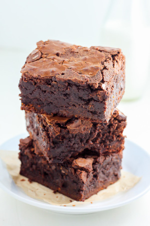

Brownies

Ingredients
- 33 .23 .5-cm baking tray, lined with greaseproof paper
- 200g dark chocolate (roughly chopped)
- 175g unsalted butter
- 325g caster sugar
- 130g plain flour
- icing sugar, to decorate
Method
- Preheat the oven to 170C
- Put the chocolate and butter in a heatproof bowl over a saucepan of simmering water
(do not let the base of the bowl touch the water). Leave until melted
- Remove from the heat. Add the sugar and stir until well incorporated. Add the flour and stir until well incorporated.
Finally, stir in the eggs and mix until thick and smooth.
- Spoon the mixture into the prepared baking tray, and bake in the preheated oven for about 30 to 35 minutes, or until flaky on the top but still soft in the centre.
Be careful not to overcook otherwise the edges will become hard and crunchy. Leave to cool completely before dusting with icing sugar, to decorate